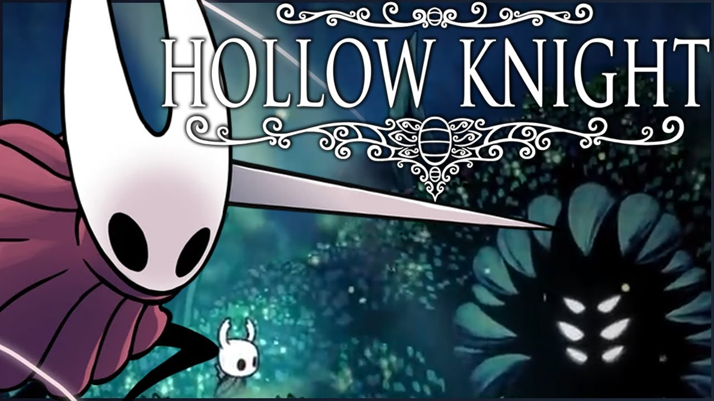

GALERIA DE HOLLOW KNIGHT
EXPLORE AS ÁREAS E SEGREDOS DE HALLOWNEST

CIDADE DAS LÁGRIMAS
Uma cidade majestosa e melancólica, constantemente encharcada pela chuva eterna. Centro do reino de Hallownest.

CAMINHO VERDE
Uma área exuberante e verdejante, com vegetação densa e criaturas amigáveis. Lar de vários insetos pacíficos.

PENHASCO DO UIVO
Um penhasco ventoso com correntes de ar poderosas. Requer habilidade para navegar e descobrir seus segredos.

PICOS CRISTALINOS
Uma área brilhante e perigosa repleta de cristais energizados. Oferece novas habilidades de mobilidade.

CELEIRO FÚNGICO
Uma área úmida e pantanosa com fungos gigantes. Lar dos destemidos guerreiros Mantis.

BOSQUE SILENCIOSO
Uma floresta assombrada por espíritos e sombras. Exige luz para navegar com segurança.
DESAFIOS E OPONENTES
OBJETIVOS PRINCIPAIS
Todos os direitos reservados © 2025 | Hollow Knight é uma propriedade da Emilly